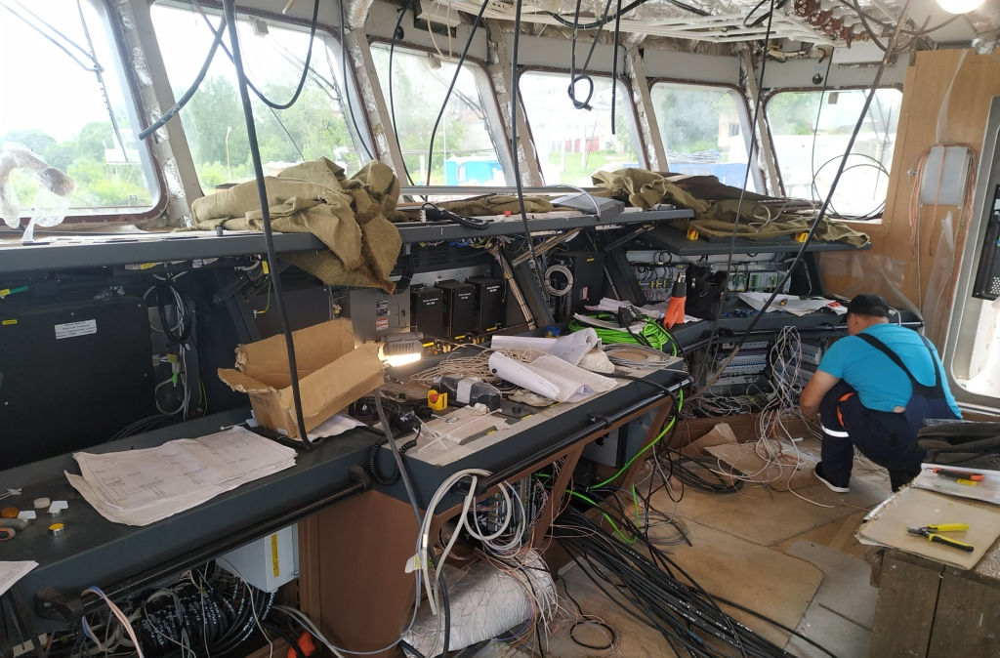

Электромонтажные работы на судах отличаются от так называемых береговых работ рядом существенных особенностей, главные из которых таковы:
а) полная зависимость электромонтажных работ от корпусных, изолировочных и судомонтажных работ, выражающаяся, в частности, в невозможности производить электромонтаж до окончания всех подготовительных работ, выполняемых другими цехами судостроительного завода, а также в необходимости подчинять электромонтаж общей организации и технологии постройки судна;
6) применение специального электрооборудования, кабелей и изделий, резко отличающихся от тех, которые используются в береговых установках;
в) своеобразие технологических процессов электромонтажа на судне, вызванное применением специального электрооборудования и кабелей, а также специфическими особенностями условий работы на строящемся судне;
г) большие неудобства при выполнении работ, создаваемые теснотой и большой насыщенностью судовых помещений оборудованием и пр.;
д) отсутствие четкого ритма в постройке серийных судов, что затрудняет организацию электромонтажных работ по принципу монтажного потока;
е) неравномерность помесячных затрат на электрооборудование, кабели, изделия и рабочую силу, усугубляющаяся большой длительностью производственного цикла;
ж) неравномерность загрузки электромонтажников, порождаемая сезонными колебаниями в сдаче готовых судов из-за климатических и навигационных условий;
з) необходимость учета требований и законов судовой архитектуры и, в частности, обязательность строгой увязки размещения электрооборудования и кабелей с размещением механизмов, трубопроводов и др.;
и) желательность высокой технической оснащенности всех электромонтажных цехов, даже небольших по величине и объему выполняемых ими работ.
«Технология электромонтажных работ на судах» Ю.С. Путято, Е.А. Иванов
